我的作品
My Works
用心创作的每一个作品
Every work created with heart
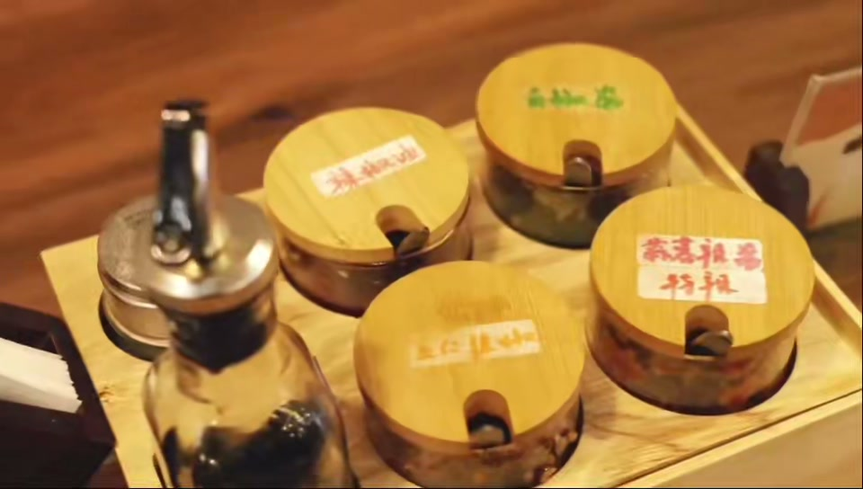
《风起潮落时》新闻纪实短片
"When the Wind Rises" News Documentary
本片以餐馆、猫咖两位青年店主为拍摄对象，聚焦青年创业热潮。 依托政策与行业数据铺垫时代背景，通过实地纪实褪去创业美化叙事， 记录小店真实经营困境，探讨理想热爱与现实生存的矛盾， 展现普通创业者的坚守与成长。
This documentary focuses on two young shop owners — a restaurant and a cat café — exploring the wave of youth entrepreneurship. Backed by policy and industry data, it strips away romanticized narratives through on-the-ground reporting, documenting the real struggles of small businesses and the tension between passion and survival.
《书香京城，悦读春天》新闻采访短片
"Scholarly Beijing, Reading Spring" News Short Film
本片以2025年世界读书日开幕的北京书市为报道主题， 通过现场走访、镜头纪实与现场采访，完整呈现本届规模最大、 展期最长的北京书市全貌。短片以纪实新闻视角记录城市公共文化活动的升级变化， 呈现北京全民阅读氛围、文化消费新趋势， 以及传统文化产业与年轻业态结合的全新城市面貌。
This short film reports on the Beijing Book Fair opening on World Book Day 2025. Through on-site visits, documentary footage, and interviews, it captures the largest and longest Beijing Book Fair to date. From a journalistic perspective, it records the evolution of urban public cultural activities, showcasing Beijing's reading culture, new trends in cultural consumption, and the fusion of traditional culture with youth-oriented industries.
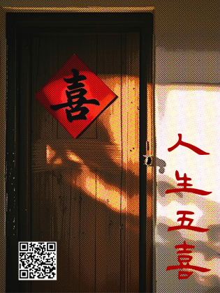
《人生五喜》先导片
"Five Joys of Life" Trailer
原创短片《人生五喜》先导预告片。以中国传统人生五大喜事 （久旱逢甘霖、他乡遇故知、洞房花烛夜、金榜题名时、 喜得贵子）为叙事线索，通过现代视角重新诠释传统意象。 影片以独特的视觉风格与叙事节奏， 探讨传统文化在当代生活中的传承与新生。
Trailer for the original short film "Five Joys of Life." Based on the five traditional Chinese celebrations — timely rain, meeting a friend far from home, wedding night, academic success, and the birth of a child — the film reinterprets traditional imagery through a modern lens, exploring the inheritance and rebirth of traditional culture in contemporary life.
空镜影像作业
B-roll Cinematography
纯空镜影像习作，全程取景雍和宫。 运用不同景别、光影捕捉建筑廊檐、 庭院景致与自然光影流转，无人物叙事， 以镜头语言传递空间静谧氛围， 练习构图、运镜与氛围感塑造能力。
Pure B-roll cinematography practice, filmed entirely at Yonghe Temple (Lama Temple). Using varying shot sizes and light to capture architectural eaves, courtyard scenery, and the flow of natural light and shadow. Without character narrative, the work conveys spatial tranquility through cinematic language, practicing composition, camera movement, and atmosphere-building.
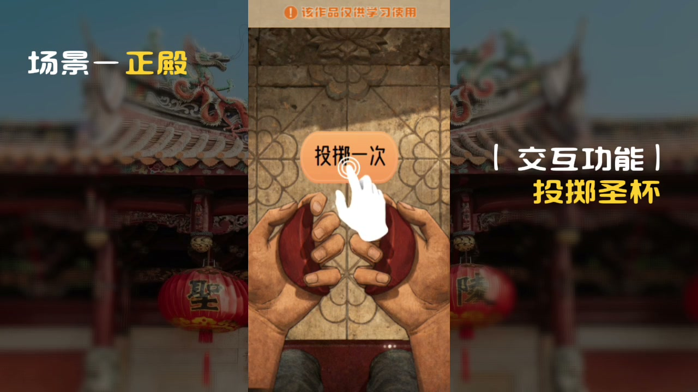
H5互动作品先导片
H5 Interactive Work Preview
数字交互H5作品先导宣传片。以动态视觉语言 展现H5作品的核心亮点与交互体验， 融合创意动效、场景转场与信息可视化设计。 作为H5作品的预热宣传， 用视频形式呈现数字交互作品的沉浸感与创新性， 引发观众的探索兴趣。
Preview promotional video for an interactive H5 digital work. Showcasing the core highlights and interactive experience through dynamic visual language, blending creative motion effects, scene transitions, and information visualization design. As pre-launch promotion, it conveys the immersive quality and innovation of the interactive work through video, sparking viewers' curiosity to explore further.
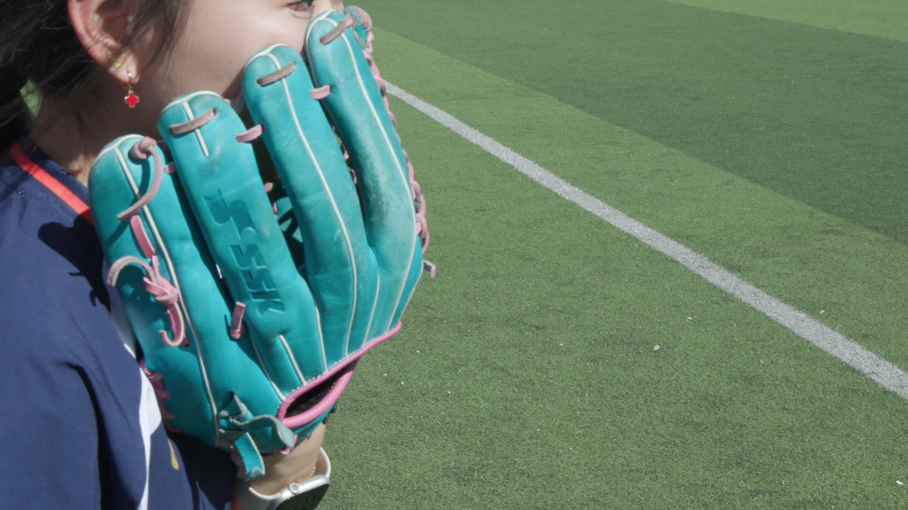
视听创作作品
Audio-Visual Creation
以同班同学垒球训练为拍摄主体， 捕捉挥棒、奔跑、接球等动态瞬间， 记录赛场鲜活的运动状态。侧重动态镜头抓拍、 人物动作叙事，还原少年运动的活力与现场真实感。 练习运动摄影、跟拍技巧与节奏剪辑。
Focusing on a classmate's softball training as the subject, capturing dynamic moments of swinging, running, and catching, documenting the vibrant energy on the field. Emphasizing dynamic shot capturing and action-driven storytelling, Practicing sports photography, tracking shots, and rhythmic editing to convey youthful energy and authentic on-site atmosphere.

《人生五喜》传统文化H5
"Five Joys of Life" Cultural H5
以中国传统"人生五喜"为主题的互动H5， 融合麻姑献寿等传统文化典故， 结合视频叙事与互动体验，传递东方美学。
Interactive H5 themed on traditional Chinese "Five Joys of Life". Integrating cultural allusions with video narration and interaction.
体验H5 → Experience →妈祖敬香祈福互动H5
Mazu Blessing Interactive H5
妈祖文化主题互动祈福H5， 包含敬香、掷圣杯等传统仪式互动， 讲述妈祖生平故事，传承非遗文化。
Mazu culture themed interactive blessing H5 with traditional rituals like incense offering and cup divination, preserving cultural heritage.
体验H5 → Experience →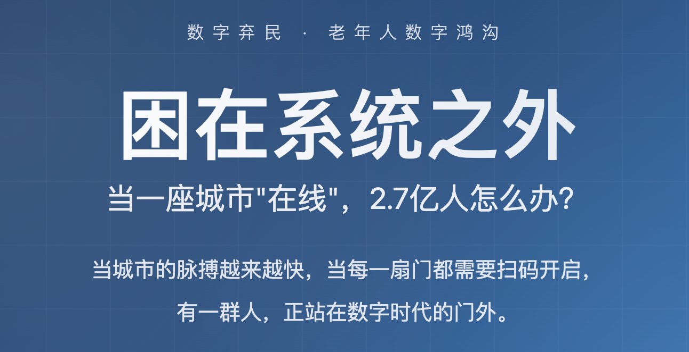
《困在系统之外》数据新闻H5
"Stuck Outside the System" Data Journalism H5
聚焦老年人数字鸿沟的融合新闻H5作品。 以挂号困境、城市慢摇等沉浸式交互章节， 结合数据可视化，展现老年人的数字生存现状。
Converged journalism H5 focusing on the digital divide among the elderly. With immersive interactive chapters on registration difficulties and urban slow living, combined with data visualization, it reveals the digital reality of senior citizens.
体验H5 → Experience →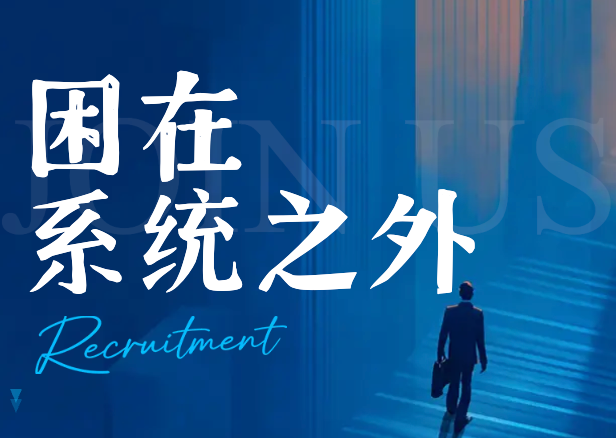
《困在系统之外》手机端H5
"Stuck Outside the System" Mobile H5
本融合新闻H5聚焦老年群体数字鸿沟问题， 移动端适配完整。作品设置线上挂号难题、 城市慢行出行两大沉浸式交互板块， 搭配数据可视化图表直观呈现老人数字化生活困境； 除量化困难指数数据外，依托移动端交互体验， 还原老年人日常使用智能设备时真实的生存处境。
This converged journalism H5 focuses on the digital divide among the elderly, fully optimized for mobile devices. Featuring two immersive interactive sections — online registration challenges and urban slow travel — paired with data visualization charts to vividly present seniors' digital life struggles. Beyond quantifying the difficulty index, the mobile interactive experience recreates the real-life challenges elderly people face when using smart devices in daily life.
体验H5 → Experience →汪苏泷生日直播海报
Silence Wang Birthday Live Poster
《见面吧星朋友》汪苏泷十万伏特生日场直播宣传海报， 话题阅读量5870万+，直播间观看量500万+， 登上微博热搜第5位、娱乐榜第3位。
"Star Online" Silence Wang birthday livestream poster. 58.7M+ topic views, 5M+ live viewers, trending #5 on Weibo Hot Search.
发电狂欢活动长图
Power Carnival Infographic
汪苏泷2024「十万伏特」演唱会收官站发电狂欢活动长图， 粉色手账风设计，含五大玩法：入场任务、点赞惊喜、 专属测试、好友召唤、城主空降。
Silence Wang 2024 "100k Volts" concert finale infographic. Pink scrapbook style with 5 interactive activities, driving fan engagement across Weibo supertopic.
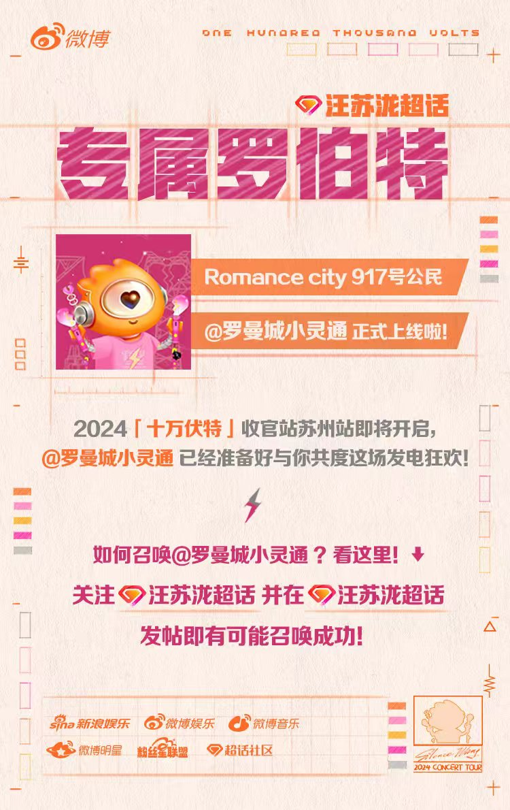
罗曼城小灵通上线海报
Romance City Bot Launch Poster
汪苏泷超话「罗曼城小灵通」机器人上线宣传海报， 复古拼贴风设计融合电路板元素， 介绍召唤方式与超话互动玩法。
Launch poster for the "Romance City Messenger" supertopic bot. Retro collage style with circuit board elements, introducing summon rules and interactions.
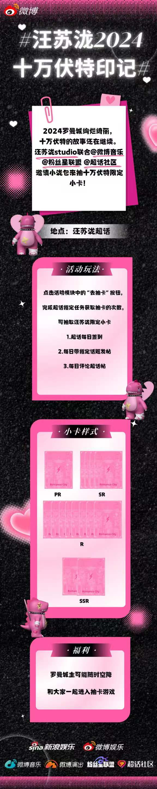
十万伏特印记抽卡长图
100k Volts Gacha Event Infographic
汪苏泷「十万伏特印记」超话抽卡活动长图， 黑粉闪钻风格，含抽卡玩法说明、 PR/SR/R/SSR四档小卡样式及粉丝福利。
"100k Volts Imprint" supertopic gacha event infographic. Black-pink glitter style with gameplay guide, 4 card tiers (PR/SR/R/SSR) and fan rewards.
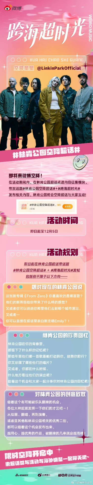
林肯公园空降活动长图
Linkin Park Supertopic Takeover Infographic
林肯公园「跨海超时光」空降超话活动长图， Y2K粉绿渐变风格，介绍活动规则及三大征集方向： 想说的话、珍贵回忆、创意致敬。
Linkin Park "Across the Sea" supertopic takeover infographic. Y2K pink-green gradient style with 3 content themes: messages, memories, and creative tributes.
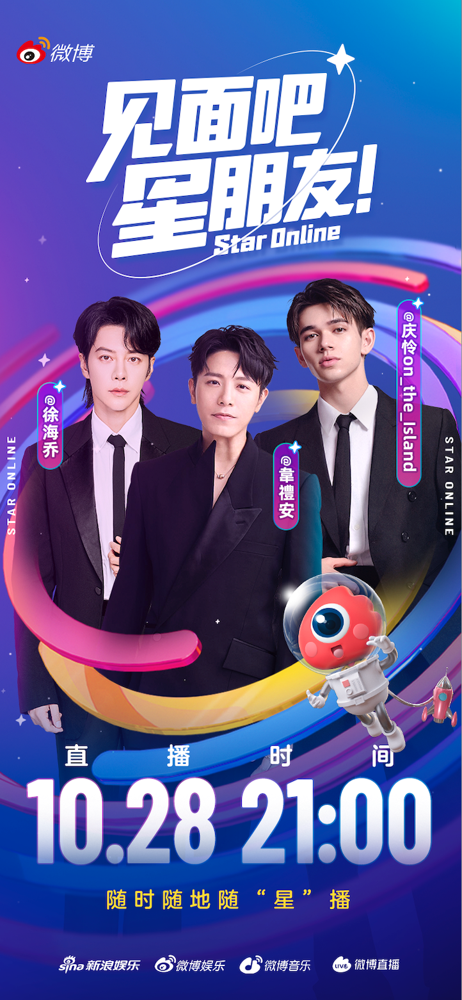
群星直播宣传海报
Star Online Multi-Artist Live Poster
《见面吧星朋友》徐海乔、韋禮安、庆怜 三人直播宣传海报，蓝紫星空科技风， 随时随地随「星」播。
"Star Online" live poster with Xu Haiqiao, William Wei, and Caelan. Blue-purple space tech style, livestream anytime anywhere.
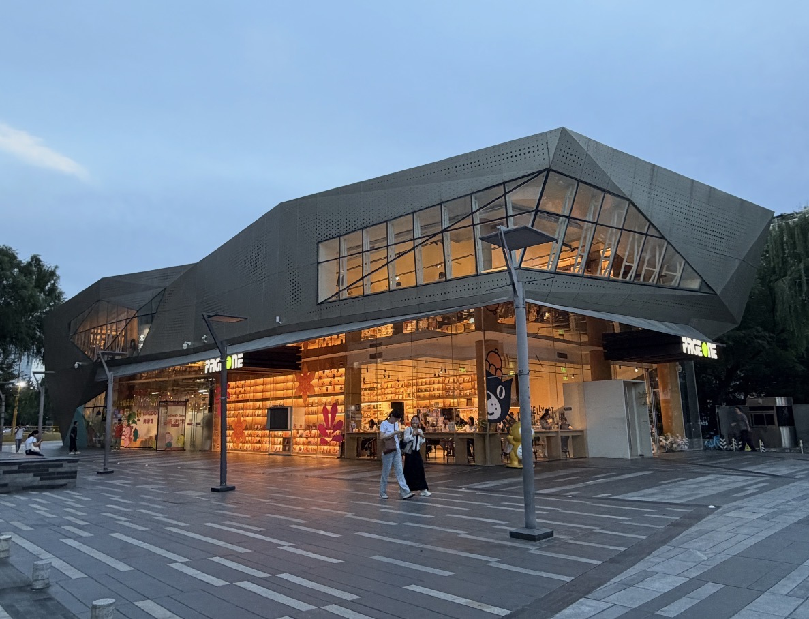
亮马河城市更新深度报道
Liangma River Urban Renewal Feature
深度报道亮马河从城市河道到"松弛感"潮流地标的蜕变， 覆盖水上运动、夜间经济、商业生态升级、 区域联动四大维度，展现"以河道复兴带动城市更新"的样本。
In-depth feature on Liangma River's transformation from urban waterway to trendy relaxation destination. Covers water sports, night economy, commercial upgrading, and regional collaboration as an urban renewal model.
阅读原文 → Read Article →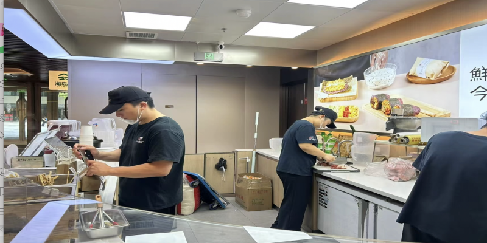
餐饮消费就业双增长报道
Food Consumption & Employment Report
深度报道夏季餐饮消费热潮，外卖日订单从1亿升至2.5亿单， 探访一线商家与从业者，揭示消费券如何催生 餐饮业就业需求与经济正向循环。
In-depth report on summer food consumption boom. Daily delivery orders surged from 100M to 250M. Explores how consumption vouchers drive employment and create a positive economic cycle.
阅读原文 → Read Article →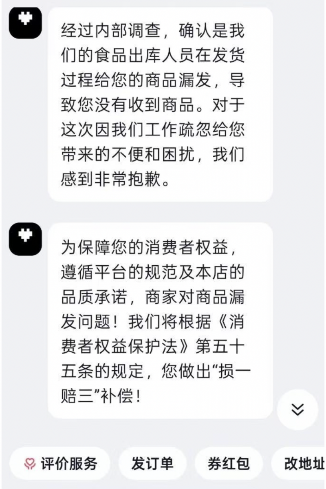
"错发快递"诈骗调查
"Wrong Delivery" Scam Investigation
揭秘新型"错发快递"电信网络诈骗手段， 采访北京警方反诈中心，拆解骗局套路与心理陷阱， 为公众提供"四不"防诈原则。
Investigative report on the "wrong delivery" telecom scam. Interviews with Beijing police anti-fraud center, exposing scam tactics and psychological traps with prevention tips.
阅读原文 → Read Article →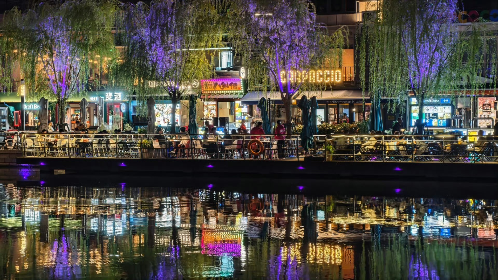
五道口商圈深度探访
Wudaokou Business District Feature
"新商圈新潮流"系列报道，探访被誉为"宇宙中心"的五道口商圈， 从清华园火车站出发，解构这片依托高校资源、 国际化与商业活力的独特商业生态。
"New Business Districts" series exploring Wudaokou, known as the "Center of the Universe". From Tsinghua to the vibrant mix of universities, international culture and dynamic commerce.
阅读原文 → Read Article →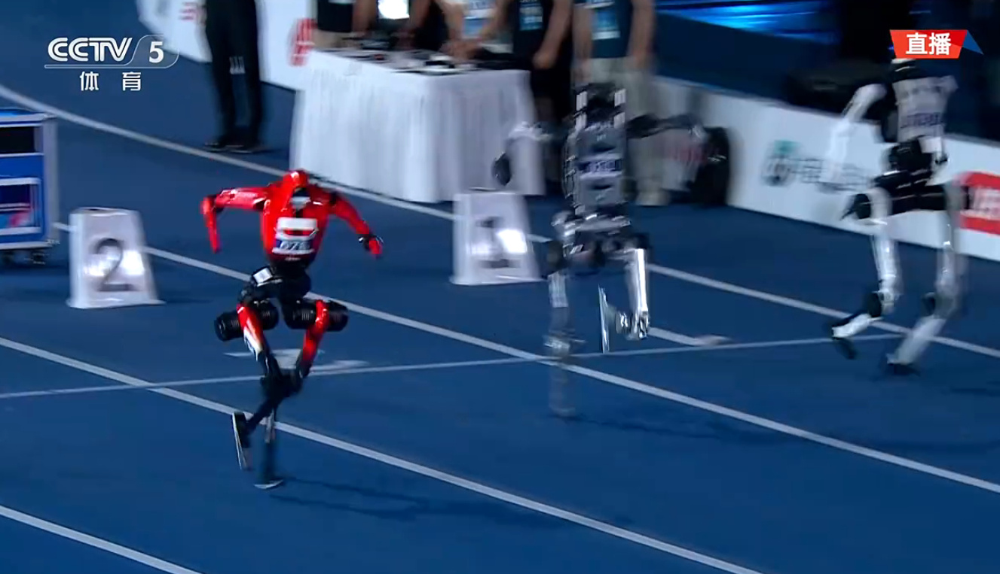
世界人形机器人大会报道
World Humanoid Robot Congress Report
2025世界人形机器人大会前瞻报道， 聚焦北京速滑馆26个赛项、487场巅峰对决， 展现机器人产业发展前沿与北京科技创新实力。
Preview report on the 2025 World Humanoid Robot Congress. 26 events, 487 competitions at Beijing Speed Skating Oval, showcasing robotics innovation and Beijing's tech prowess.
阅读原文 → Read Article →